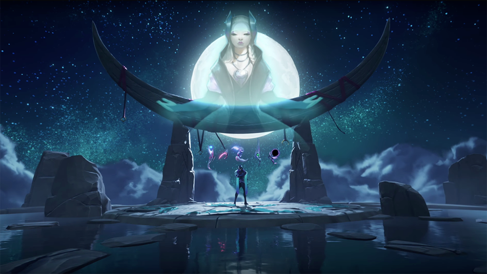
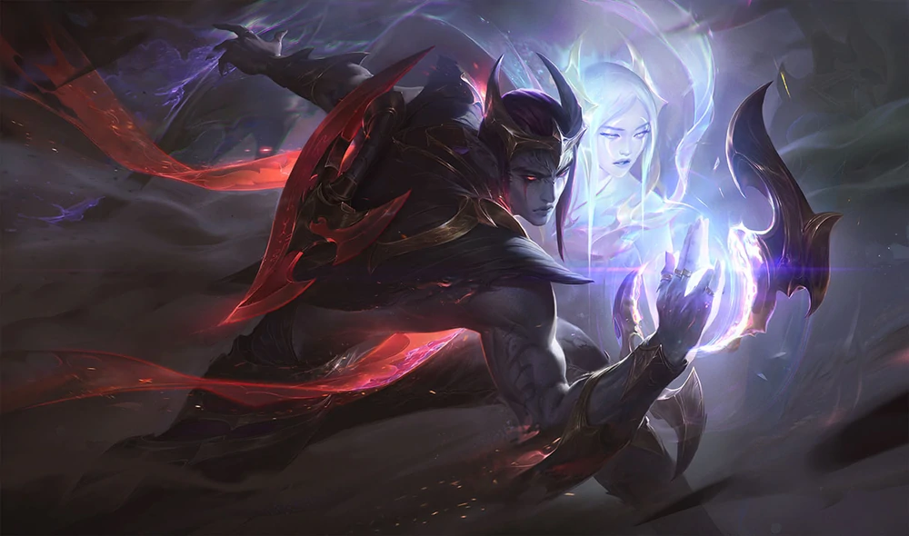
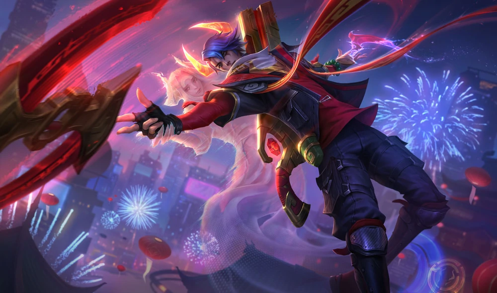

Aphelios
The Weapon of The Faithful
marksman
“Our faith is proven fate each time we deny it.”
Emerging from moonlight's shadow with weapons drawn, Aphelios kills the enemies of his faith in brooding silence—speaking only through the certainty of his aim, and the firing of each gun. Though fueled by a poison that renders him mute, he is guided by his sister Alune. From her distant temple sanctuary, she pushes an arsenal of moonstone weapons into his hands. For as long as the moon shines overhead, Aphelios will never be alone.
Abilities


THE HITMAN AND THE SEER (Passive)
Aphelios wields 5 Lunari Weapons made by his sister Alune. He has access to two at a time: one main-hand and one off-hand. Each weapon has a unique Basic Attack and Ability. Attacks and abilities consume a weapon's ammo. When out of ammo, he discards the weapon and Alune summons the next of the 5.WEAPON ABILITES (Q)
Aphelios has 5 different activated abilities, based on his main-hand weapon: Calibrum (Rifle): Long range shot that marks its target for a long-range follow-up attack. Severum (Scythe Pistol): Run fast while attacking nearby enemies with both weapons. Gravitum (Cannon): Root all enemies slowed by this weapon. Infernum (Flamethrower): Blast enemies in a cone and attack them with your off-hand weapon. Crescendum (Chakram): Deploy a sentry that shoots your off-hand weapon.PHASE (W)
Aphelios swaps his main-hand gun with his off-hand gun, replacing his basic attack and activated ability.WEAPON QUEUE SYSTEM (E)
Aphelios has no third ability. This slot shows the next weapon Alune will give him. Weapon order begins fixed but may change over game time - when a weapon is out of ammo it goes to the end of the order.MOONLIGHT VIGIL (R)
Fire a concentrated blast of moonlight that explodes on enemy champions. Applies the unique effect of Aphelios' main-hand gun.
THE HITMAN AND THE SEER (Passive)
Aphelios wields 5 Lunari Weapons made by his sister Alune. He has access to two at a time: one main-hand and one off-hand. Each weapon has a unique Basic Attack and Ability. Attacks and abilities consume a weapon's ammo. When out of ammo, he discards the weapon and Alune summons the next of the 5.WEAPON ABILITES (Q)
Aphelios has 5 different activated abilities, based on his main-hand weapon: Calibrum (Rifle): Long range shot that marks its target for a long-range follow-up attack. Severum (Scythe Pistol): Run fast while attacking nearby enemies with both weapons. Gravitum (Cannon): Root all enemies slowed by this weapon. Infernum (Flamethrower): Blast enemies in a cone and attack them with your off-hand weapon. Crescendum (Chakram): Deploy a sentry that shoots your off-hand weapon.
PHASE (W)
Aphelios swaps his main-hand gun with his off-hand gun, replacing his basic attack and activated ability.WEAPON QUEUE SYSTEM (E)
Aphelios has no third ability. This slot shows the next weapon Alune will give him. Weapon order begins fixed but may change over game time - when a weapon is out of ammo it goes to the end of the order.
MOONLIGHT VIGIL (R)
Fire a concentrated blast of moonlight that explodes on enemy champions. Applies the unique effect of Aphelios' main-hand gun.Available Skins

Nightbringer Aphelios

Nightbringer Aphelios